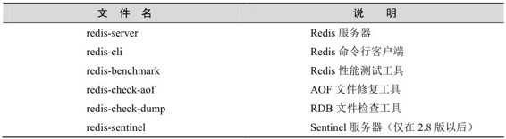

2.2 启动和停止Redis
安装完 Redis 后的下一步就是启动它，本节将分别介绍在开发环境和生产环境中运行Redis的方法以及正确停止Redis的步骤。
在这之前首先需要了解Redis包含的可执行文件都有哪些，表 2-1 中列出了这些程序的名称以及对应的说明。如果在编译后执行了 make install命令，这些程序会被复制到/usr/local/bin目录内，所以在命令行中直接输入程序名称即可执行。
表2-1 Redis可执行文件说明

我们最常使用的两个程序是redis-server和redis-cli，其中redis-server是Redis的服务器，启动Redis即运行redis-server；而redis-cli是Redis自带的Redis命令行客户端，是学习Redis的重要工具，2.3节会详细介绍它。
启动 Redis 有直接启动和通过初始化脚本启动两种方式，分别适用于开发环境和生产环境。
1．直接启动
直接运行redis-server即可启动Redis，十分简单：
$ redis-server
[5101] 14 Dec 20:58:59.944 # Warning: no config file specified, using the default config. In order to specify a config file use redis-server /path/to/redis.conf
[5101] 14 Dec 20:58:59.948 * Max number of open files set to 10032
...
[5101] 14 Dec 20:58:59.949 # Server started, Redis version 2.6.9
[5101] 14 Dec 20:58:59.949 * The server is now ready to accept connections on port 6379
Redis服务器默认会使用6379端口[3] ，通过--port参数可以自定义端口号：
$ redis-server --port 6380
2．通过初始化脚本启动Redis
在Linux系统中可以通过初始化脚本启动Redis，使得Redis能随系统自动运行，在生产环境中推荐使用此方法运行Redis，这里以Ubuntu和Debian发行版为例进行介绍。在Redis源代码目录的utils文件夹中有一个名为redis_init_script的初始化脚本文件，内容如下：
#!/bin/sh
#
# Simple Redis init.d script conceived to work on Linux systems
# as it does use of the /proc filesystem.
REDISPORT=6379
EXEC=/usr/local/bin/redis-server
CLIEXEC=/usr/local/bin/redis-cli
PIDFILE=/var/run/redis_${REDISPORT}.pid
CONF="/etc/redis/${REDISPORT}.conf"
case "$1" in
start)
if [ -f $PIDFILE ]
then
echo "$PIDFILE exists, process is already running or crashed"
else
echo "Starting Redis server..."
$EXEC $CONF
fi
;;
stop)
if [ ! -f $PIDFILE ]
then
echo "$PIDFILE does not exist, process is not running"
else
PID=$(cat $PIDFILE)
echo "Stopping ..."
$CLIEXEC -p $REDISPORT shutdown
while [ -x /proc/${PID} ]
do
echo "Waiting for Redis to shutdown ..."
sleep 1
done
echo "Redis stopped"
fi
;;
*)
echo "Please use start or stop as first argument"
;;
esac
我们需要配置Redis的运行方式和持久化文件、日志文件的存储位置等，具体步骤如下。
（1）配置初始化脚本。首先将初始化脚本复制到/etc/init.d 目录中，文件名为 redis_端口号，其中端口号表示要让Redis监听的端口号，客户端通过该端口连接Redis。然后修改脚本第6行的REDISPORT变量的值为同样的端口号。
（2）建立需要的文件夹。建立表2-2中列出的目录。
表2-2 需要建立的目录及说明
（3）修改配置文件。首先将配置文件模板（见 2.4 节介绍）复制到/etc/redis 目录中，以端口号命名（如“6379.conf”），然后按照表2-3对其中的部分参数进行编辑。
表2-3 需要修改的配置及说明
现在就可以使用/etc/init.d/redis_端口号start来启动Redis了，而后需要执行下面的命令使Redis随系统自动启动：
$ sudo update-rc.d redis_端口号 defaults
考虑到 Redis 有可能正在将内存中的数据同步到硬盘中，强行终止 Redis 进程可能会导致数据丢失。正确停止Redis的方式应该是向Redis发送SHUTDOWN命令，方法为：
$ redis-cli SHUTDOWN
当Redis收到SHUTDOWN命令后，会先断开所有客户端连接，然后根据配置执行持久化，最后完成退出。
Redis可以妥善处理 SIGTERM信号，所以使用 kill Redis 进程的 PID也可以正常结束Redis，效果与发送SHUTDOWN命令一样。